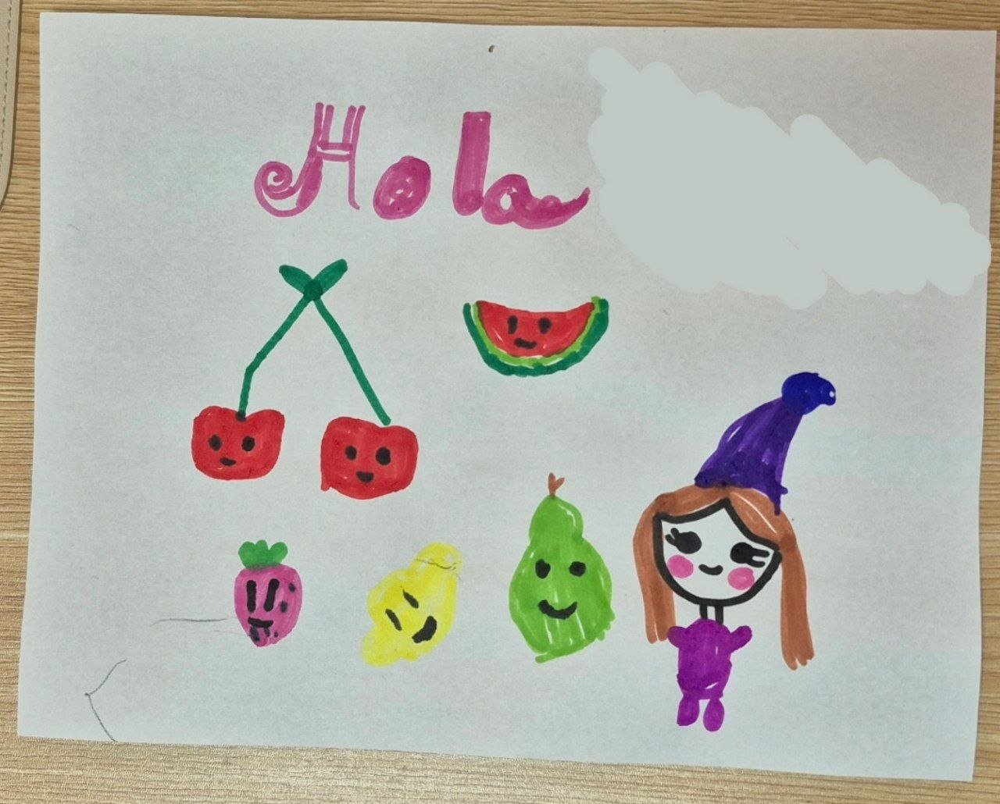
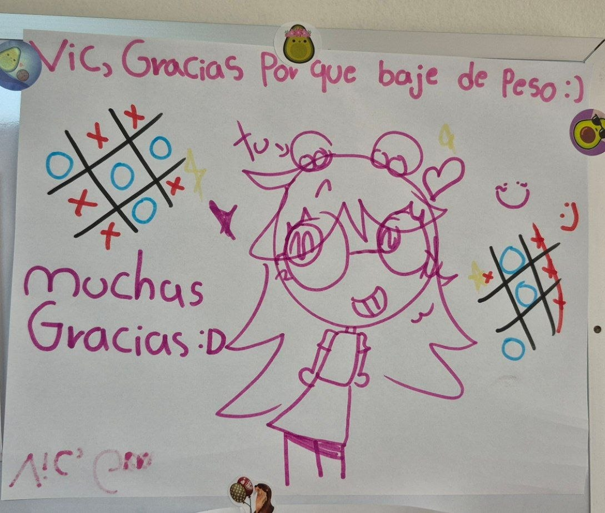
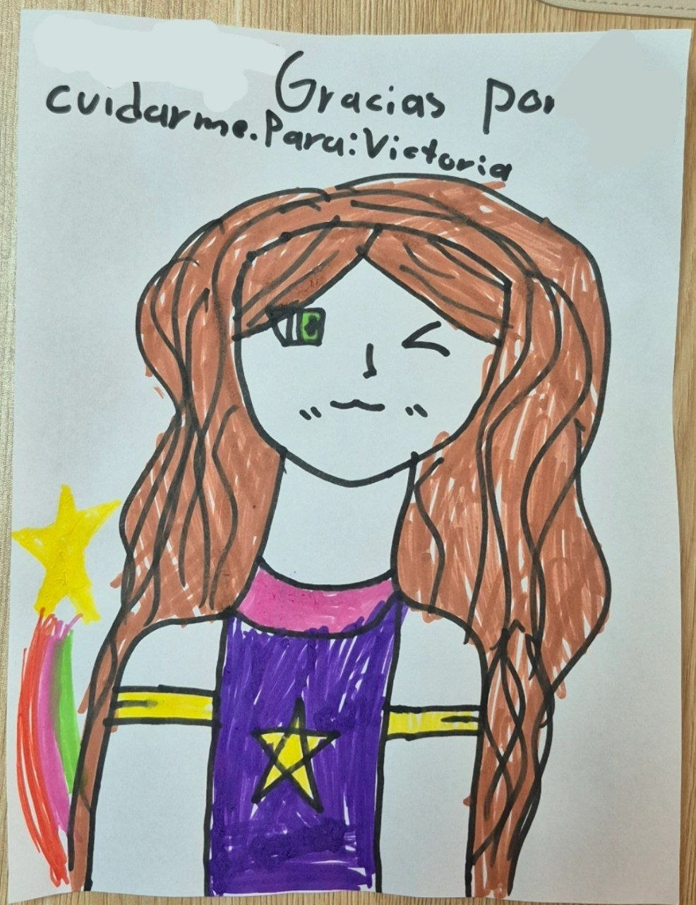
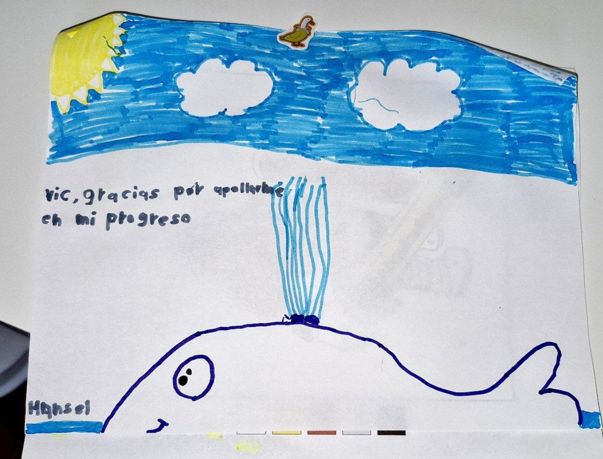
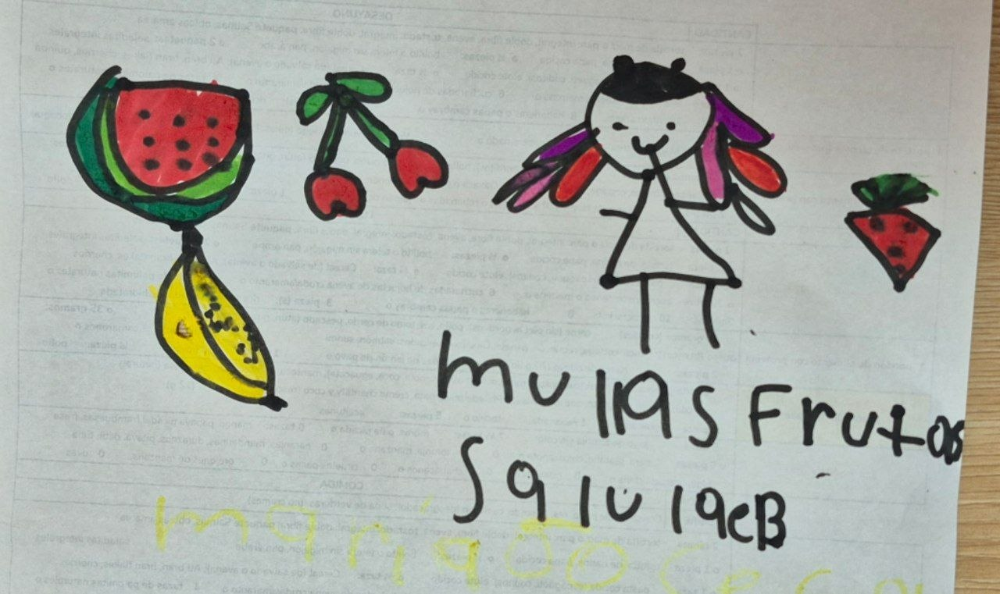
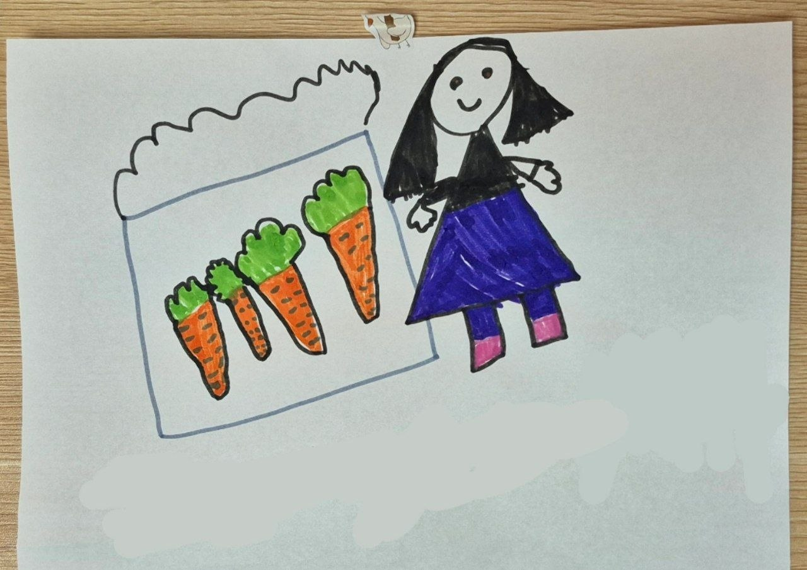

Lo que dicen las familias que me han acompañado, y algunos dibujos que mis pacientes más peques me han regalado en consulta.
"La seguridad, atención y el cariño que le da a mi hija en cada consulta es preciosa, mi hija sale siempre feliz."
"Aprendí a comer con más consciencia y dejé de sentir culpa en cada comida. La atención fue muy amable y clara desde la primera sesión."
"Siempre obtengo una explicación clara y siento que el tiempo de mi consulta está bien utilizado. Recomiendo a Victoria 100%."
"Lo que más valoro de la consulta con Victoria son los aprendizajes de alimentos saludables y el apoyo en consultas de los productos más comunes en el mercado. Se nota que le gusta lo que hace."
"Mi hijo dejó de tenerle miedo a probar cosas nuevas. Victoria tiene mucha paciencia con los niños."
"Me encantan sus explicaciones, las opciones de alimentos para animar a mi hija y apertura a resolución de dudas."
Cada dibujo cuenta algo sobre su proceso vivido en consulta. Compartido con el permiso de sus papás.





